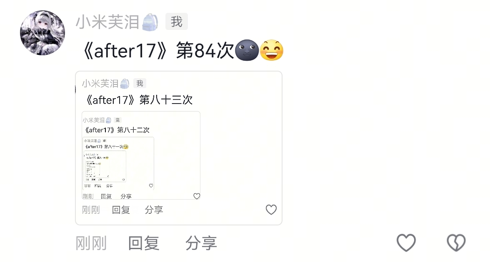

你听过最假的话是什么
人与人建立关系需要千万个日夜 而归零只需要一个瞬间
失去比拥有更踏实
恋爱脑不可怕，清醒且心软的人才是最痛的[快哭了]
最懂这几句词的杀伤力[流泪]
没有原则性问题的分开才是最痛的 两个人相爱相知 是因为异地 落差感等等一系列问题分开 犹如剜心割肉 把两个紧紧相连的人撕开 里面血肉模糊的 全是泪
虽然很辛苦，虽然死了很多人，却给后世留下了旷世之作，永保了我华夏神州，没有长城，抗击不了外来入侵可能会死更多的人，所以说秦始皇的功劳是至高无上的[赞]
看过虹猫蓝兔的，都已经不在了吧[泣不成声][泣不成声]
现在国产武侠剧里，这么行事果断的大侠已经没有了 “七剑合璧后杀了马三娘”
[灵机一动]跳跳当时还在卧底期间，虹猫遇到了大麻烦，本来跳跳都要出手帮忙了，后来眼珠一转说“如果虹猫就这么死掉，那他也不配领导七剑合壁。”扭头玩去了
黑白两道哪个看见了不得叫一声虹猫少侠
00后小时候看：人生不过一百年 长大后：100年是不是太长了点[暗中观察]
今天什么烟陪一根
泡芙你真的谈过恋爱吗
《after17》第八十五次[泣不成声] 
天呐终于有人说这事了我看到那个保洁阿姨休息间的事突然沉默了[流泪][流泪]很想发声但是不知道做什么，就把卫生间最后一间搞成休息室这对吗[流泪][流泪]这哪里对啊
对啊，保洁阿姨的工资还不如保安
这一层思维真的好高啊，天呐 听到以在厕所空间休息视为不体面 其实厕所隔间也是白领的休息空间，真的被震撼到[流泪][流泪]
姐姐，说太棒啦，好先进的人文关怀，好超前的思想观念，好丰富的精神内涵
我婆婆不让穿尿不湿，她说男孩就要透气。她愿意洗，我觉得她说的对
这居然是他的歌的间奏啊
姐妹用的什么设备拍的，可以带相机吗？
我了个神级间奏[眼含热泪]
有种万物复苏生机勃勃的感觉
啊啊啊啊啊这是汪苏泷《晴》的间奏，麻烦让更多人知道好吗[流泪][流泪][流泪][流泪][流泪]
才知道这是晴的间奏
这首歌曾经是恶魔少爷别吻我的OST[流泪]
能不能让郑润泽，颜人中，汪苏泷，林俊杰，周杰伦一起开个演唱会[泪奔]
汪苏泷的很多歌前奏也都超级好听 一笑倾城前奏谁懂[舔屏]
真的很喜欢晴的间奏，有种在英国街头的午后，天气明朗，太阳高高的挂在天上，阳光透过树枝的缝隙打在道路上，人来人往，车来车往，而这首歌叫晴，是有太阳的晴天，英国有个称呼叫日不落帝国，所以会联想到英国[流泪][流泪]
汪苏泷说：很多人把我的名字和居然 竟然联系在一起 看了评论区是真的
终于可以让大家知道这个间奏是汪苏泷的！！！！
全国青少年犯规大赛[捂脸]
我感觉我活的肯定不如它[逞强落泪][逞强落泪][逞强落泪][泣不成声][泣不成声][泣不成声]
女声简直是原唱级别 两个人声线还蛮搭的诶！！现在关注还算老粉吗[大笑]
当时小小的老子被姜武迷成智障[憨笑]
哇塞刚听女声以为是很甜美的 听完整句才发现是好有故事感的腔调
这么多年我才知道这是大哥陈楚生唱的歌[流泪]
招摇真的是，拿到现在来播都是很新怡的题材不是跟现在一样这么多换汤不换药的剧，如果结局不乱魔改那简直大爆剧，剧情开始那几集真的太好看了太吸引人，看到后面大女主削弱变成娇妻就看不下去了
6年了陈楚生唱的《招摇》杀回来了，6年前没有登上的顶，今年登！
都在夸这个姐姐，真的很好听，男生也特别厉害声线很独特！组合真的爆了！！！！
女声绝了
评论区怎么没看见夸这个男生的 女生的声线跟原唱很贴切 我感觉男生的声线跟原唱也很贴 真的特别好听 一开始我还以为只有女生在唱 这个男生声线太戳我了[舔屏]
下班路上昏沉沉，听到感觉天灵盖被剥开来洗干净了，还熏香香的，好清醒
这些东西你刘辉哥哥研究得透
我发现现在中国周边许多国家都有这么一种共识就是：中国行，我也行[笑哭][笑哭]
说句实话，不是这两天刷到世博会新闻，我都不知道还有国家在办世博会
说真的，日本办个世博会不如办个大型漫展来的赚钱
很难想象一个创造了那么多经典动漫角色的国家，能弄出来一个像痔疮瘤子粘连起来的吉祥物。
日本世博会的吉祥物才是最抽象的，屁股上还有个眼睛[捂脸][捂脸]
当年建世博会的工人，到今天依然是建世博会的工人？！[震惊]
只有我注意到1970年大阪世博会期间的4W多儿童走失吗[耶][耶][耶]
传真机。。。我有十多年没见过这玩意儿了[捂脸][捂脸]
死爸妄想症
你们都在笑 我只看到了一个疑惑又绝望的灭爸
我成“灭爸”了？
“你们都知道自己亲爸是谁吗” 更是重量级别[二哈]
《我杀了你爸》《嘉禾说》《池野说》《你也说》《死爸妄想症》
老师老师！我把老家的特产带来了！
Read more: